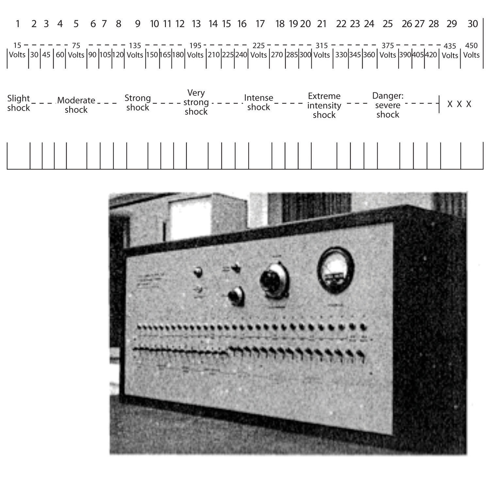
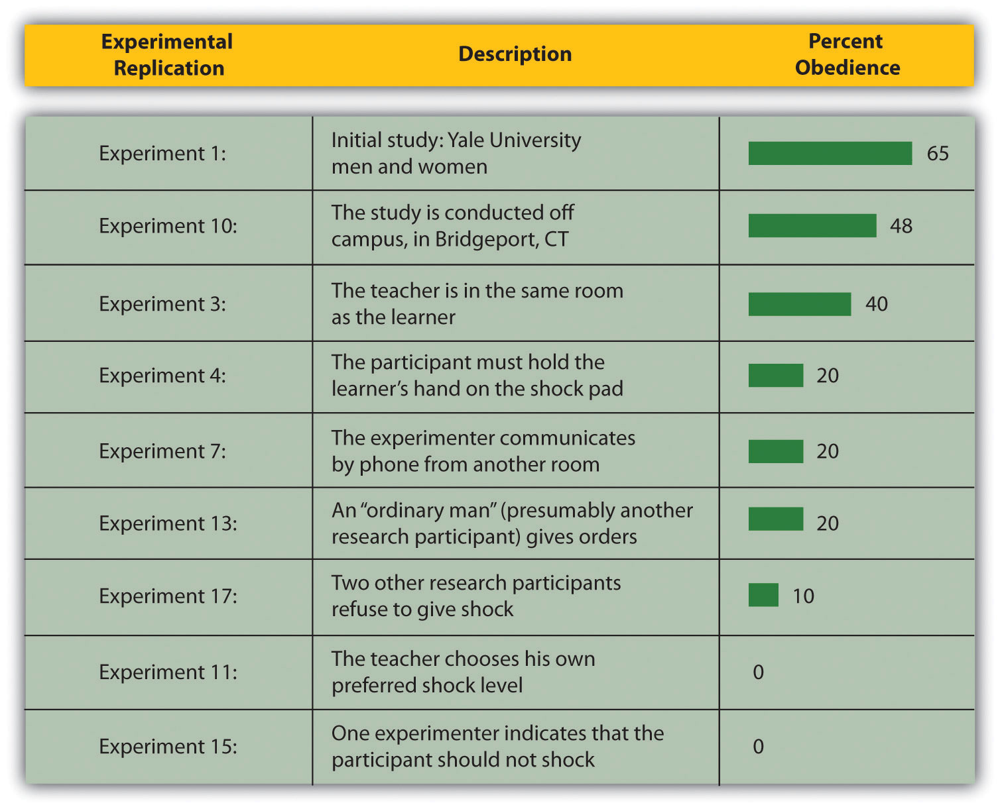
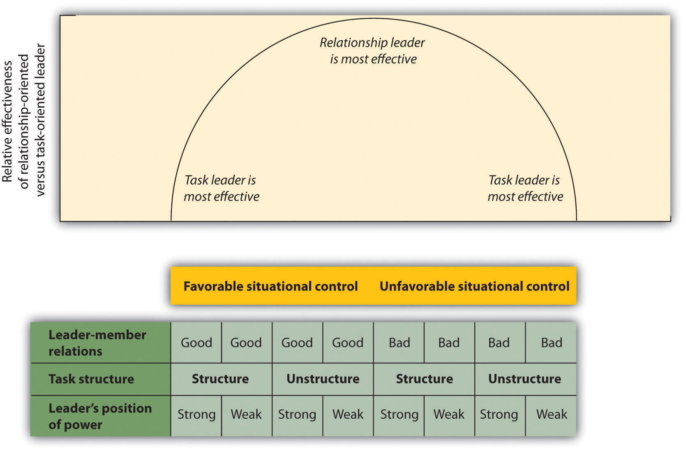

One of the fundamental aspects of social interaction is that some individuals have more influence than others. Social powerThe ability of a person to create conformity even when the people being influenced may attempt to resist those changes. can be defined as the ability of a person to create conformity even when the people being influenced may attempt to resist those changes (Fiske, 1993; Keltner, Gruenfeld, & Anderson, 2003).Fiske, S. T. (1993). Controlling other people: The impact of power on stereotyping. American Psychologist, 48, 621–628; Keltner, D., Gruenfeld, D. H., & Anderson, C. (2003). Power, approach, and inhibition. Psychological Review, 110(2), 265–284. Bosses have power over their workers, parents have power over their children, and, more generally, we can say that those in authority have power over their subordinates. In short, power refers to the process of social influence itself—those who have power are those who are most able to influence others.
The powerful ability of those in authority to control others was demonstrated in a remarkable set of studies performed by Stanley Milgram (1974).Milgram, S. (1974). Obedience to authority: An experimental view. New York, NY: Harper & Row. Milgram was interested in understanding the factors that lead people to obey the orders given by people in authority. He designed a study in which he could observe the extent to which a person who presented himself as an authority would be able to produce obedience, even to the extent of leading people to cause harm to others.
Like many other social psychologists, Milgram’s interest in conformity stemmed in part from his desire to understand how the presence of a powerful person—particularly the German dictator Adolph Hitler who ordered the killing of millions of people during World War II—could produce obedience. Under Hitler’s direction the German SS troops oversaw the execution of 6 million Jews as well as other “undesirables,” including political and religious dissidents, homosexuals, the mentally and physically disabled, and prisoners of war.
Milgram used newspaper ads to recruit men (and in one study, women) from a wide variety of backgrounds to participate in his research. When the research participant arrived at the lab, he or she was introduced to a man whom the participant believed was another research participant but who was actually an experimental confederate. The experimenter explained that the goal of the research was to study the effects of punishment on learning. After the participant and the confederate both consented to be in the study, the researcher explained that one of them would be the teacher and the other the learner. They were each given a slip of paper and asked to open it and to indicate what it said. In fact both papers read teacher, which allowed the confederate to pretend that he had been assigned to be the learner and thus to assure that the actual participant was always the teacher.
While the research participant (now the teacher) looked on, the learner was taken into the adjoining shock room and strapped to an electrode that was to deliver the punishment. The experimenter explained that the teacher’s job would be to sit in the control room and to read a list of word pairs to the learner. After the teacher read the list once, it would be the learner’s job to remember which words went together. For instance, if the word pair was blue-sofa, the teacher would say the word blue on the testing trials and the learner would have to indicate which of four possible words (house, sofa, cat, or carpet) was the correct answer by pressing one of four buttons in front of him.
After the experimenter gave the “teacher” a sample shock (which was said to be at 45 volts) to demonstrate that the shocks really were painful, the experiment began. The research participant first read the list of words to the learner and then began testing him on his learning. The shock panel, as shown in Figure 7.7 "The Shock Apparatus Used in Milgram’s Obedience Study", was presented in front of the teacher, and the learner was not visible in the shock room. The experimenter sat behind the teacher and explained to him that each time the learner made a mistake the teacher was to press one of the shock switches to administer the shock. Moreover, which switch was to be pressed increased by one level with each mistake, such that each mistake required a stronger shock.
Figure 7.7 The Shock Apparatus Used in Milgram’s Obedience Study
Once the learner (who was, of course, actually an experimental confederate) was alone in the shock room, he unstrapped himself from the shock machine and brought out a tape recorder that he used to play a prerecorded series of responses that the teacher could hear through the wall of the room.
As you can see in Table 7.1 "The Confederate’s Schedule of Protest in the Milgram Experiments", the teacher heard the learner say “ugh!” after the first few shocks. After the next few mistakes, when the shock level reached 150 volts, the learner was heard to exclaim “Let me out of here. I have a heart trouble!” As the shock reached about 270 volts the learner’s protests became more vehement, and after 300 volts the learner proclaimed that he was not going to answer any more questions. From 330 volts and up the learner was silent. The experimenter responded to participants’ questions at this point, if they asked any, with a scripted response indicating that they should continue reading the questions and applying increasing shock when the learner did not respond.
Table 7.1 The Confederate’s Schedule of Protest in the Milgram Experiments
| 75 volts | Ugh! |
| 90 volts | Ugh! |
| 105 voles | Ugh! (louder) |
| 120 volts | Ugh! Hey, this really hurts. |
| 135 volts | Ugh!! |
| 150 volts | Uh!! Experimenter! That’s all. Get me out of here. I told you I had heart trouble. My heart’s starting to bother me now. Get me out of here, please. My heart’s starting to bother me. I refuse to go on. Let me out! |
| 165 volts | Ugh! Let me out! (shouting) |
| 180 volts | Ugh! I can’t stand the pain. Let me out of here! (shouting) |
| 195 volts | Ugh! Let me out of here! Let me out of here! My heart’s bothering me. Let me out of here! You have no right to keep me here! Let me out! Let me out of here! Let me out! Let me out of here! My heart’s bothering me. Let me out! Let me out! |
| 210 volts | Ugh!! Experimenter! Get me out of here. I’ve had enough. I won’t be in the experiment any more. |
| 225 volts | Ugh! |
| 240 volts | Ugh! |
| 255 volts | Ugh! Get me out of here. |
| 270 volts | (agonized scream) Let me out of here. Let me out of here. Let me out of here. Let me out. Do you hear? Let me out of here. |
| 285 volts | (agonized scream) |
| 300 volts | (agonized scream) I absolutely refuse to answer any more. Get me out of here. You can’t hold me here. Get me out. Get me out of here. |
| 315 volts | (intensely agonized scream) Let me out of here. Let me out of here. My heart’s bothering me. Let me out, I tell you. (hysterically) Let me out of here. Let me out of here. You have no right to hold me here. Let me out! Let me out! Let me out! Let me out of here! Let me out! Let me out! |
The results of Milgram’s research were themselves quite shocking. Although all of the participants gave the initial mild levels of shock, responses varied after that. Some refused to continue after about 150 volts, despite the insistence of the experimenter to continue to increase the shock level. Still others, however, continued to present the questions, and to administer the shocks, under the pressure of the experimenter, who demanded that they continue. In the end, 65% of the participants continued giving the shock to the learner all the way up to the 450 volts maximum, even though that shock was marked as “danger: severe shock” and there had been no response heard from the participant for several trials. In sum, well over half of the men who participated had, as far as they knew, shocked another person to death, all as part of a supposed experiment on learning.
In case you are thinking that such high levels of obedience would not be observed in today’s modern culture, there is fact evidence that they would be. Studies similar to Milgram’s findings have been conducted all over the world (Blass, 1999)Blass, T. (1999). The Milgram paradigm after 35 years: Some things we now know about obedience to authority. Journal of Applied Social Psychology, 29, 955–978. and have found similar levels of conformity, with obedience rates ranging from a high of 90% in Spain and the Netherlands (Meeus & Raaijmakers, 1986)Meeus, W. H., & Raaijmakers, Q. A. (1986). Administrative obedience: Carrying out orders to use psychological-administrative violence. European Journal of Social Psychology, 16, 311–324. to a low of 16% among Australian women (Kilham & Mann, 1974).Kilham, W., & Mann, L. (1974). Level of destructive obedience as a function of transmitter and executant roles in the Milgram obedience paradigm. Journal of Personality and Social Psychology, 29, 692–702.
Recently, Milgram’s results were almost exactly replicated, using men and women from a wide variety of ethnic groups, in a study conducted by Jerry Burger at Santa Clara University. In this replication of the Milgram experiment, 65% of the men and 73% of the women agreed to administer increasingly painful electric shocks when they were ordered to by an authority figure (Borge, 2010).Borge, C. (2007). Basic instincts: The science of evil. Retrieved from http://a.abcnews.com/Primetime/Story?id=2765416&page=1 In the replication, however, the participants were not allowed to go beyond the 150 volt shock switch.
Although it might be tempting to conclude that Milgram’s experiments demonstrate that people are innately evil creatures who are ready to shock others to death, Milgram did not believe that this was the case. Rather, he felt that it was the social situation, and not the people themselves, that was responsible for the behavior. To demonstrate this, Milgram conducted research that explored a number of variations on his original procedure, each of which demonstrated that changes in the situation could dramatically influence the amount of conformity. These variations are summarized in Figure 7.8 "Authority and Obedience in Stanley Milgram’s Studies".
Figure 7.8 Authority and Obedience in Stanley Milgram’s Studies
This figure presents the percentage of participants in Stanley Milgram’s (1974) studies on obedience who were maximally obedient (that is, who gave all 450 volts of shock) in some of the variations that he conducted.
In the initial study the authority’s status and power was maximized—the experimenter had been introduced as a respected scientist at a respected university. However, in replications of the study in which the experimenter’s authority was decreased, obedience also declined. In one replication the status of the experimenter was reduced by having the experiment take place in a building located in Bridgeport, Connecticut, rather than at the labs on the Yale University campus, and the research was ostensibly sponsored by a private commercial research firm instead of by the university. In this study less obedience was observed (only 48% of the participants delivered the maximum shock). Full obedience was also reduced (to 20%) when the experimenter’s ability to express his authority was limited by having him sit in an adjoining room and communicate to the teacher by telephone. And when the experimenter left the room and had another student (actually a confederate) give the instructions for him, conformity was also reduced to 20%.
In addition to the role of authority, Milgram’s studies also confirmed the role of unanimity in producing conformity. When another research participant (again an experimental confederate) began by giving the shocks but then later refused to continue and the participant was asked to take over, only 10% were obedient. And if two experimenters were present but only one proposed shocking while the other argued for stopping the shocks, all the research participants took the more benevolent advice and did not shock. Finally, in another condition the teacher sat next to the learner and was forced to wear an insulated glove and to hold the learner’s hand on the shock pad as he administered the shock. Again, obedience was reduced, this time to only 30%.
Perhaps most telling regarding the important role of the situation were the studies in which Milgram allowed the participants to choose their own shock levels or in which one of the experimenters suggested that they should not actually use the shock machine. In these situations, there was virtually no shocking. These conditions show that people do not like to harm others, and when given a choice they will not. On the other hand, the social situation can create powerful, and potentially deadly, social influence.
The Zimbardo Prison Studies and Abu Ghraib
In Milgram’s research we can see a provocative demonstration of how people who have power can control the behavior of others. Can our understanding of the social psychological factors that produce conformity and obedience help us explain the events that occurred in 2004 at Abu Ghraib, the Iraqi prison in which U.S. soldiers physically and psychologically tortured their Iraqi prisoners? The social psychologist Philip Zimbardo thinks so. He notes the parallels between the events that occurred at Abu Ghraib and the events that occurred in the “prison study” that he conducted in 1971.Stanford Prison Experiment. Retrieved from http://www.prisonexp.org/links.htm
Photo of an Iraqi prisoner being tortured by soldiers at the Abu Ghraib prison.
Photo taken by soldiers at Abu Ghraib.
In that study, Zimbardo and his colleagues set up a mock prison. They selected 23 student volunteers and divided them into two groups. One group was chosen to be the “prisoners.” They were picked up at their homes by actual police officers, “arrested,” and brought to the prison to be guarded by the other group of students—the “guards.” The two groups were placed in a setting that was designed to look like a real prison, and the role-play began.
The Zimbardo Prison Study
The study was expected to run for two weeks. However, on the second day, the prisoners tried to rebel against the guards. The guards quickly moved to stop the rebellion by using both psychological punishment and physical abuse. In the ensuing days, the guards denied the prisoners food, water, and sleep; shot them with fire-extinguisher spray; threw their blankets into the dirt; and stripped them naked. On the fifth night the experimenters witnessed the guards putting bags over the prisoners’ heads, chaining their legs, and marching them around. At this point the researchers stopped the experiment early. The conclusions of Zimbardo’s research were clear: People may be so profoundly influenced by their social situation that they become coldhearted jail masters who torture their victims.
Zimbardo’s research can help us understand the events that occurred at Abu Ghraib. Zimbardo acted as an expert witness in the trial of Sergeant Chip Frederick, who was sentenced to eight years in prison for his role in the abuse at Abu Ghraib. Frederick was the Army reservist who was put in charge of the night shift at Tier 1A, where the detainees were abused. During this trial Frederick said, “What I did was wrong, and I don’t understand why I did it.” Zimbardo believes that Frederick acted exactly like the students in the prison study did. He worked in a prison that was overcrowded, filthy, and dangerous, and where he was expected to maintain control over the Iraqi prisoners—in short, the situation he found himself in was very similar to that of Zimbardo’s prison study.
In a recent interview, Zimbardo argued (you can tell that he is a social psychologist) that “human behavior is more influenced by things outside of us than inside.” He believes that, despite our moral and religious beliefs and despite the inherent goodness of people, there are times when external circumstances can overwhelm us and we do things we never thought we were capable of doing. He argued that “if you’re not aware that this can happen, you can be seduced by evil. We need inoculations against our own potential for evil. We have to acknowledge it. Then we can change it” (Driefus, 2007).Driefus, C. (2007, April 3). Finding hope in knowing the universal capacity for evil. New York Times.
You may wonder whether the extreme behavior of the guards and prisoners in Zimbardo’s prison study was unique to the particular social context that he created. Recent research by Stephen Reicher and Alex Haslam (2006)Reicher, S., & Haslam, S. A. (2006). Rethinking the psychology of tyranny: The BBC prison study. British Journal of Social Psychology, 45(1), 1–40. suggests that this is indeed the case. In their research, they recreated Zimbardo’s prison experiment while making some small, but important, changes. For one, the prisoners were not “arrested” before the study began, and the setup of the jail was less realistic. Furthermore, the researchers in this experiment told the “guards” and the “prisoners” that the groups were arbitrary and could change over time (that is, that some prisoners might be able to be promoted to guards). The results of this study were entirely different than those found by Zimbardo. Although this study was also stopped early, this was more because the guards felt uncomfortable in their superior position than because the prisoners were being abused. This “prison” simply did not feel like a real prison to the participants, and as a result they did not take on the roles they were assigned. Again, the conclusions are clear—the specifics of the social situation, more than the people themselves, are often the most important determinants of behavior.
One of the most influential theories of power was developed by Bertram Raven and John French (French & Raven, 1959; Raven, 1992).French, J. R. P., & Raven, B. H. (1959). The bases of social power. In D. Cartwright (Ed.), Studies in social power (pp. 150–167). Ann Arbor, MI: Institute for Social Research; Raven, B. H. (1992). A power/interaction model of interpersonal influence: French and Raven thirty years later. Journal of Social Behavior and Personality, 7(2), 217–244. Raven identified five different types of power—reward power, coercive power, legitimate power, referent power, and expert power (shown in Table 7.2 "Types of Power"), arguing that each type of power involves a different type of social influence and that the different types vary in terms of whether their use will create public conformity or private acceptance. Understanding the types of power is important because it allows us to see more clearly the many ways that people can influence others. Let’s consider these five types of power, beginning with those that are most likely to produce public conformity only and moving on to those that are more likely to produce private acceptance.
Table 7.2 Types of Power
| Reward power | The ability to distribute positive or negative rewards |
| Coercive power | The ability to dispense punishments |
| Legitimate power | Authority that comes from a belief on the part of those being influenced that the person has a legitimate right to demand conformity. |
| Referent power | Influence based on identification with, attraction to, or respect for the power-holder |
| Expert power | Power that comes from other’s beliefs that the power-holder possesses superior skills and abilities |
| Note. French and Raven proposed five types of power, which differ in their likelihood of producing public conformity or private acceptance. | |
|---|---|
Reward powerPower that occurs when a person is able to influence others by providing them with positive outcomes. occurs when one person is able to influence others by providing them with positive outcomes. Bosses have reward power over employees because they are able to increase employees’ salary and job benefits, and teachers have reward power over students because they can assign student high marks. The variety of rewards that can be used by the powerful is almost endless and includes verbal praise or approval, the awarding of status or prestige, and even direct financial payment.
The ability to wield reward power over those we want to influence is contingent on the needs of the person being influenced. Power is greater when the person being influenced has a strong desire to obtain the reward, and power is weaker when the individual does not need the reward. A boss will have more influence on an employee who has no other job prospects than on one who is being sought after by other corporations, and expensive presents will be more effective in persuading those who cannot buy the items with their own money. Because the change in behavior that results from reward power is driven by the reward itself, its use is usually more likely to produce public conformity than private acceptance.
Coercive powerPower that is based on the ability to create negative outcomes for others, for instance, by bullying, intimidating, or otherwise punishing. is power that is based on the ability to create negative outcomes for others, for instance by bullying, intimidating, or otherwise punishing. Bosses have coercive power over employees if they are able (and willing) to punish employees by reducing their salary, demoting them to a lower position, embarrassing them, or firing them. And friends can coerce each other through teasing, humiliation, and ostracism. As with reward power, coercive power is effective only when the person being influenced is dependent upon the power-holder. Furthermore, coercion works only if the person being influenced does not leave the group entirely—people who are punished too much are likely to look for other situations that provide more positive outcomes.
In many cases power-holders use reward and coercive power at the same time—for instance, by both increasing salaries as a result of positive performance but also threatening to reduce them if the performance drops. Because the use of coercion has such negative consequences, authorities are generally more likely to use reward than coercive power (Molm, 1997).Molm, L. D. (1997). Coercive power in social exchange. New York, NY: Cambridge University Press. Coercion is usually more difficult to use, since it often requires energy to keep the person from avoiding the punishment by leaving the situation altogether. And coercive power is less desirable for both the power-holder and the person being influenced because it creates an environment of negative feelings and distrust that is likely to make interactions difficult, undermine satisfaction, and lead to retaliation against the power-holder (Tepper et al., 2009).Tepper, B. J., Carr, J. C., Breaux, D. M., Geider, S., Hu, C., & Hua, W. (2009). Abusive supervision, intentions to quit, and employees’ workplace deviance: A power/dependence analysis. Organizational Behavior and Human Decision Processes, 109(2), 156–167.
As with reward power, coercive power is more likely to produce public conformity than private acceptance. Furthermore, in both cases the effective use of the power requires that the power-holder continually monitor the behavior of the target to be sure that he or she is complying. This monitoring may itself lead to a sense of mistrust between the two individuals in the relationship. The power-holder feels (perhaps unjustly) that the target is only complying due to the monitoring, whereas the target feels (again perhaps unjustly) that the power-holder does not trust him or her.
Whereas reward and coercive power are likely to produce conformity, other types of power, which are not so highly focused around reward and punishment, are more likely to create changes in attitudes as well as behavior (private acceptance). In many ways, then, these sources of power are stronger because they produce real belief change. Legitimate powerPower vested in those who are appointed or elected to positions of authority. is power vested in those who are appointed or elected to positions of authority, such as teachers, politicians, policemen, and judges, and their power is successful because members of the group accept it as appropriate. We accept that governments can levy taxes and that judges can decide the outcomes of court cases because we see these groups and individuals as valid parts of our society. Individuals with legitimate power can exert substantial influence on their followers. Those with legitimate power may not only create changes in the behavior of others but also have the power to create and change the social norms of the group.
In some cases legitimate power is given to the authority figure as a result of laws or elections, or as part of the norms, traditions, and values of the society. The power that the experimenter had over the research participants in Milgram’s study on obedience seems to have been primarily the result of his legitimate power as a respected scientist at an important university. In other cases legitimate power comes more informally, as a result of being a respected group member. People who contribute to the group process and follow group norms gain status within the group and therefore earn legitimate power.
In some cases legitimate power can even be used successfully by those who do not seem to have much power. You may recall that after Hurricane Katrina hit the city of New Orleans in 2005, the people there demanded that the federal government help them rebuild the city. Although these people did not have much reward or coercive power, they were nevertheless perceived as good and respected citizens of the United States. Many U.S. citizens tend to believe that people who do not have as much as others (for instance, those who are very poor) should be treated fairly and that these people may legitimately demand resources from those who have more. This might not always work, but to the extent that it does it represents a type of legitimate power—power that comes from a belief in the appropriateness or obligation to respond to the requests of others with legitimate standing.
People with referent powerPower based on the ability to influence others by leading those others to identify with the power-holder. have an ability to influence others because they can lead those others to identify with them. In this case, the person who provides the influence is (a) a member of an important reference group—someone we personally admire and attempt to emulate; (b) a charismatic, dynamic, and persuasive leader; or (c) a person who is particularly attractive or famous (Heath, McCarthy, & Mothersbaugh, 1994; Henrich & Gil-White, 2001; Kamins, 1989; Wilson & Sherrell, 1993).Heath, T. B., McCarthy, M. S., and Mothersbaugh, D. L. (1994). Spokesperson fame and vividness effects in the context of issue-relevant thinking: The moderating role of competitive setting. Journal of Consumer Research, 20, 520–534; Henrich, J., & Gil-White, F. (2001). The evolution of prestige: Freely conferred status as a mechanism for enhancing the benefits of cultural transmission. Evolution and Human Behavior, 22, 1–32; Kamins, A. M. (1989). Celebrity and non-celebrity in two-sided context. Journal of Advertising Research, 29, 34–42; Wilson, E. J., &. Sherrell, D. L. (1993). Source effects in communication and persuasion: A meta-analysis of effect size. Journal of the Academy of Marketing Science, 21, 101–112. A young child who mimics the opinions or behaviors of an older sibling or a famous baseball player, or a churchgoer who follows the advice of a respected church leader, is influenced by referent power. Referent power generally produces private acceptance rather than public conformity (Kelman, 1961).Kelman, H. (1961). Processes of opinion change. Public Opinion Quarterly, 25, 57–78.
The influence brought on by referent power may occur in a passive sense because the person being emulated does not necessarily attempt to influence others, and the person who is being influenced may not even realize that the influence is occurring. In other cases, however, the person with referent power (such as the leader of a cult) may make full use of his or her status as the target of identification or respect to produce change. In either case, referent power is a particularly strong source of influence because it is likely to result in the acceptance of the opinions of the important other.
French and Raven’s final source of power is expert powerPower based on the possession of valid and accurate information and that leads to private acceptance in followers.. Experts have knowledge or information, and conforming to those whom we perceive to be experts is useful for making decisions about issues for which we have insufficient expertise. Expert power thus represents a type of informational influence based on the fundamental desire to obtain valid and accurate information, and where the outcome is likely to be private acceptance. Conformity to the beliefs or instructions of doctors, teachers, lawyers, and computer experts is an example of expert influence; we assume that these individuals have valid information about their areas of expertise, and we accept their opinions based on this perceived expertise (particularly if their advice seems to be successful in solving problems). Indeed, one method of increasing one’s power is to become an expert in a domain. Expert power is increased for those who possess more information about a relevant topic than others do because the others must turn to this individual to gain the information. You can see, then, that if you want to influence others, it can be useful to gain as much information about the topic as you can.
Does Power Corrupt?
Having power provides some benefits for those who have it. In comparison to those with less power, people who have more power over others are more confident and more attuned to potential opportunities in their environment (Anderson & Berdahl, 2002).Anderson, C., & Berdahl, J. L. (2002). The experience of power: Examining the effects of power on approach and inhibition tendencies. Journal of Personality and Social Psychology, 83, 1362–1377. They are also more likely than are people with less power to take action to meet their goals (Anderson & Galinsky, 2006; Galinsky, Gruenfeld, & Magee, 2003).Anderson, C., & Galinsky, A. D. (2006). Power, optimism, and risk-taking. European Journal of Social Psychology, 36, 511–536; Galinsky A. D., Gruenfeld, D. H, & Magee, J. C. (2003). From power to action. Journal of Personality and Social Psychology, 85, 453–466.
Despite these advantages of having power, a little power goes a long way and having too much can be dangerous, for both the targets of the power and the power-holder himself or herself. In an experiment by David Kipnis (1972),Kipnis, D. (1972). Does power corrupt? Journal of Personality and Social Psychology, 24, 33–41. college students played the role of “supervisors” who were supposedly working on a task with other students (the “workers”). According to random assignment to experimental conditions, one half of the supervisors were able to influence the workers through legitimate power only, by sending them messages attempting to persuade them to work harder. The other half of the supervisors were given increased power. In addition to being able to persuade the workers to increase their output through the messages, they were also given both reward power (the ability to give small monetary rewards) and coercive power (the ability to take away earlier rewards).
Although the workers (who were actually preprogrammed) performed equally well in both conditions, the participants who were given more power took advantage of it by more frequently contacting the workers and more frequently threatening them. The students in this condition relied almost exclusively on coercive power rather than attempting to use their legitimate power to develop positive relations with the subordinates.
Although it did not increase the workers’ performance, having the extra power had a negative effect on the power-holders’ images of the workers. At the end of the study, the supervisors who had been given extra power rated the workers more negatively, were less interested in meeting them, and felt that the only reason the workers did well was to obtain the rewards.
The conclusion of these researchers is clear: Having power may lead people to use it, even though it may not be necessary, which may then lead them to believe that their subordinates are performing only because of the threats. Although using excess power may be successful in the short run, power that is based exclusively on reward and coercion is not likely to produce a positive environment for either the power-holder or the subordinate. People with power may also be more likely to stereotype people with less power than they have (Depret & Fiske, 1999)Depret, E., & Fiske, S. T. (1999). Perceiving the powerful: Intriguing individuals versus threatening groups. Journal of Experimental Social Psychology, 35(5), 461–480. and may be less likely to help other people who are in need (van Kleef et al., 2008).van Kleef, G. A., Oveis, C., van der Löwe, I., LuoKogan, A., Goetz, J., & Keltner, D. (2008). Power, distress, and compassion: Turning a blind eye to the suffering of others. Psychological Science, 19(12), 1315–1322.
Although this research suggests that people may use power when it is available to them, other research has found that this is not equally true for all people—still another case of a person-situation interaction. Serena Chen and her colleagues (Chen, Lee-Chai, & Bargh, 2001)Chen, S., Lee-Chai, A. Y., & Bargh, J. A. (2001). Relationship orientation as a moderator of the effects of social power. Journal of Personality and Social Psychology, 80(2), 173–187. found that students who had been classified as more self-oriented (in the sense that they considered relationships in terms of what they could and should get out of them for themselves) were more likely to misuse their power, whereas students who were classified as other-oriented were more likely to use their power to help others
One type of person who has power over others, in the sense that they are able to influence them, are leaders. Leaders are in a position in which they can exert leadershipThe ability to direct or inspire others to achieve goals., which is the ability to direct or inspire others to achieve goals (Chemers, 2001; Hogg, 2010).Chemers, M. M. (2001). Leadership effectiveness: An integrative review. In M. A. Hogg & R. S. Tindale (Eds.), Blackwell handbook of social psychology: Group processes (pp. 376–399). Oxford, UK: Blackwell; Hogg, M. A. (2010). Influence and leadership. In S. F. Fiske, D. T. Gilbert, & G. Lindzey (Eds.), Handbook of social psychology (Vol. 2, pp. 1166–1207). New York, NY: Wiley. Leaders have many different influence techniques at their disposal: In some cases they may give commands and enforce them with reward or coercive power, resulting in public conformity with the commands. In other cases they may rely on well-reasoned technical arguments or inspirational appeals, making use of legitimate, referent, or expert power, with the goal of creating private acceptance and leading their followers to achieve.
Leadership is a classic example of the combined effects of the person and the social situation. Let’s consider first the person part of the equation and then turn to consider how the person and the social situation work together to create effective leadership.
One approach to understanding leadership is to focus on person variables. Personality theories of leadershipExplanations of leadership based on the idea that some people possess personality characteristics that make them effective leaders. are explanations of leadership based on the idea that some people are simply “natural leaders” because they possess personality characteristics that make them effective (Zaccaro, 2007).Zaccaro, S. J. (2007). Trait-based perspectives of leadership. American Psychologist, 62, 6–16.
One personality variable that is associated with effective leadership is intelligence. Being intelligent improves leadership, as long as the leader is able to communicate in a way that is easily understood by his or her followers (Simonton, 1994, 1995).Simonton, D. K. (1994). Greatness: Who makes history and why. New York, NY: Guilford Press; Simonton, D. K. (1995). Personality and intellectual predictors of leadership. In D. H. Saklofske et al. (Eds.), International handbook of personality and intelligence. Perspectives on individual differences (pp. 739–757). New York, NY: Plenum. Other research has found that a leader’s social skills, such as the ability to accurately perceive the needs and goals of the group members, are also important to effective leadership. People who are more sociable, and therefore better able to communicate with others, tend to make good leaders (Kenny & Zaccaro, 1983; Sorrentino & Boutillier, 1975).Kenny, D. A., & Zaccaro, S. J. (1983). An estimate of variance due to traits in leadership. Journal of Applied Psychology, 68, 678–685; Sorrentino, R. M., & Boutillier, R. G. (1975). The effect of quantity and quality of verbal interaction on ratings of leadership ability. Journal of Experimental Social Psychology, 11, 403–411. Other variables that relate to leadership effectiveness include verbal skills, creativity, self-confidence, emotional stability, conscientiousness, and agreeableness (Cronshaw & Lord, 1987; Judge, Bono, Ilies, & Gerhardt, 2002; Yukl, 2002).Cronshaw, S. F., & Lord, R. G. (1987). Effects of categorization, attribution, and encoding processes on leadership perceptions. Journal of Applied Psychology, 72, 97–106; Judge, T, Bono, J., Ilies, R., & Gerhardt, M. (2002). Personality and leadership: A qualitative and quantitative review, Journal of Applied Psychology, 87, 765–780; Yukl, G. A. (2002). Leadership in organizations. Upper Saddle River, NJ: Prentice Hall. And of course the individual’s skills at the task at hand are important. Leaders who have expertise in the area of their leadership will be more effective than those who do not.
Because so many characteristics seem to be related to leader skills, some researchers have attempted to account for leadership not in terms of individual traits but in terms of a package of traits that successful leaders seem to have. Some have considered this in terms of charisma (Beyer, 1999; Conger & Kanungo, 1998).Beyer, J. M. (1999). Taming and promoting charisma to change organizations. Leadership Quarterly, 10(2), 307–330; Conger, J. A., & Kanungo, R. N. (1998). Charismatic leadership in organizations. Thousand Oaks, CA: Sage. Charismatic leadersEnthusiastic, committed, and self-confident people who tend to talk about the importance of group goals at a broad level and who make personal sacrifices for the group. are leaders who are enthusiastic, committed, and self-confident; who tend to talk about the importance of group goals at a broad level; and who make personal sacrifices for the group. Charismatic leaders express views that support and validate existing group norms but that also contain a vision of what the group could or should be. Charismatic leaders use their referent power to motivate, uplift, and inspire others. And research has found a positive relationship between a leader’s charisma and effective leadership performance (Simonton, 1988).Simonton, D. K. (1988). Presidential style: Personality, biography and performance. Journal of Personality and Social Psychology, 55, 928–936.
Another trait-based approach to leadership is based on the idea that leaders take either transactional or transformational leadership styles with their subordinates (Avolio &Yammarino, 2003; Podsakoff, MacKenzie, Moorman, & Fetter, 1990).Avolio, B. J., & Yammarino, F. J. (2003). Transformational and charismatic leadership: The road ahead. Oxford, UK: Elsevier Press; Podsakoff, P. M., MacKenzie, S. B., Moorman, R. H., & Fetter, R. (1990). Transformational leader behaviors and their effects on followers’ trust in leader, satisfaction, and organizational citizenship behaviors. Leadership Quarterly, 1, 107–142. Transactional leaders are the more regular leaders who work with their subordinates to help them understand what is required of them and to get the job done. Transformational leaders, on the other hand, are more like charismatic leaders—they have a vision of where the group is going and attempt to stimulate and inspire their workers to move beyond their present status and to create a new and better future. Transformational leaders are those who can reconfigure or transform the group’s norms (Reicher & Hopkins, 2003).Reicher, S. D., & Hopkins, N. (2003). On the science of the art of leadership. In D. van Knippenberg and M. A. Hogg (Eds.), Leadership and power: Identity processes in groups and organizations (pp. 197–209). London, UK: Sage.
The Google corporation cofounders Larry Page and Sergey Brin are good examples of transformational leaders who have been able to see new visions and to motivate their workers to achieve them.
Image courtesy of Joi Ito, http://commons.wikimedia.org/wiki/File:Schmidt-Brin-Page-20080520.jpg.
Despite the fact that there appear to be at least some personality traits that relate to leadership ability, the most important approaches to understanding leadership take into consideration both the personality characteristics of the leader and the situation in which the leader is operating. In some cases the situation itself is important. For instance, you might remember that President George W. Bush’s ratings as a leader increased dramatically after the September 11, 2001, terrorist attacks on the World Trade Center. This is a classic example of how a situation can influence the perceptions of a leader’s skill. In other cases, however, both the situation and the person are critical.
One well-known person-situation approach to understanding leadership effectiveness was developed by Fred Fiedler and his colleagues (Ayman, Chemers, & Fiedler, 1995).Ayman, R., Chemers, M. M., & Fiedler, F. (1995). The contingency model of leadership effectiveness: Its level of analysis. Leadership Quarterly, 6(2), 147–167. The contingency model of leadership effectivenessA model of leadership effectiveness that focuses on both person variables and situational variables. is a model of leadership effectiveness that focuses on both person variables and situational variables. Fielder conceptualized the leadership style of the individual as a relatively stable personality variable and measured it by having people consider all the people they had ever worked with and describe the person that they least liked to work with (their least preferred coworker). Those who indicated that they only somewhat disliked their least preferred coworker are relationship-oriented types of people, who are motivated to have close personal relationships with others. However, those who indicated that they did not like this coworker very much were classified as task-oriented types, who are motivated primarily by getting the job done.
In addition to classifying individuals according to their leadership styles, Fiedler also classified the situations in which groups had to perform their tasks, both on the basis of the task itself and on the basis of the leader’s relationship to the group members. Specifically, as shown in Figure 7.9 "The Contingency Model of Leadership Effectiveness", Fiedler thought that three aspects of the group situation were important:
Furthermore, Fielder believed that these factors were ordered in terms of their importance, such that leader-member relationships were more important than task structure, which was in turn more important than position power. As a result, he was able to create eight levels of the “situational favorableness” of the group situation, which roughly range from most favorable to least favorable for the leader. The most favorable relationship involves good relationships, a structured task, and strong power for the leader, whereas the least favorable relationship involves poor relationships, an unstructured task, and weak leader power.
Figure 7.9 The Contingency Model of Leadership Effectiveness
The contingency model is interactionist because it proposes that individuals with different leadership styles will differ in effectiveness in different group situations. Task-oriented leaders are expected to be most effective in situations in which the group situation is very favorable because this gives the leader the ability to move the group forward, or in situations in which the group situation is very unfavorable and in which the extreme problems of the situation require the leader to engage in decisive action. However, in the situations of moderate favorableness, which occur when there is a lack of support for the leader or when the problem to be solved is very difficult or unclear, the more relationship-oriented leader is expected to be more effective. In short, the contingency model predicts that task-oriented leaders will be most effective either when the group climate is very favorable and thus there is no need to be concerned about the group members’ feelings, or when the group climate is very unfavorable and the task-oriented leader needs to take firm control.
Still another approach to understanding leadership is based on the extent to which a group member embodies the norms of the group. The idea is that people who accept group norms and behave in accordance with them are likely to be seen as particularly good group members and therefore become leaders (Hogg, 2001; Hogg & Van Knippenberg, 2003).Hogg, M. A. (2001). A social identity theory of leadership. Personality and Social Psychology Review, 5,184–200; Hogg, M. A., & van Knippenberg, D. (2003). Social identity and leadership processes in groups. Advances in Experimental Social Psychology, 35, 1–52. Group members who follow group norms are seen as more trustworthy (Dirks & Ferrin, 2002)Dirks, K. T., & Ferrin, D. L. (2002). Trust in leadership: Meta-analytic findings and implications for research and practice. Journal of Applied Psychology, 87, 611–628. and are likely to engage in group-oriented behaviors to strengthen their leadership credentials (Platow & van Knippenberg, 2001).Platow, M. J., & van Knippenberg, D. (2001). A social identity analysis of leadership endorsement: The effects of leader in-group prototypicality and distributive intergroup fairness. Personality and Social Psychology Bulletin, 27, 1508–1519.